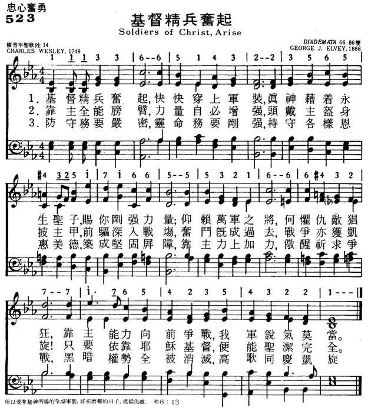
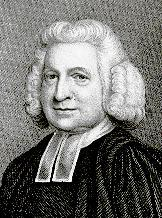
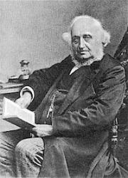
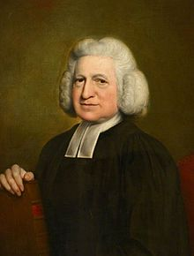

|
|
|
|
1 Soldiers of Christ, arise, 2 Stand then in his great might, 3 To keep your armor bright, |
523基督精兵奋起
1.基督精兵奋起，快快穿上军装，
上帝借着永生圣子，赐你刚强力量； 仰赖万军之将，何惧仇敌猖狂， 靠主能力向前争战，我军锐气莫当。 2.靠主全能膀臂，力量自必增强， 头戴主盔身披主甲，前驱深入战场， 奋斗既成过去，战争亦获凯旋！ 只要依靠耶稣基督，便能圣洁完全。 3.防守务要严密，灵命务要刚强， 持守各样恩惠美德，筑成坚固屏障， 靠主力上加力，警醒祈求争战， 黑暗权势全被消灭，高歌同庆凯旋。 |
|
https://www.mred365.cn/szxg/7526.html  https://hymnary.org/hymn/BH2008/page/903
|
|
|
|
|


北497 基督精兵！兴起！ https://youtu.be/m-0xOToAqBg -
Hymns of Praise: The Story of Hymn Writer Charles Wesley (2010) | Full Movie | Rev. John P Jackman https://www.youtube.com/watch?v=qLa1yvs7_cw
| Text: | Soldiers of Christ, Arise |
| Author: | Charles Wesley |
| Tune: | DIADEMATA |
| Composer: | George J. Elvey |

Tune Information
| Title: | DIADEMATA (Elvey) |
| Composer: | George J. Elvey (1868) |
| Meter: | 6.6.8.6 |
| Incipit: | 11133 66514 32235 |
| Key: | E♭ Major |
| Copyright: | Public Domain |
| Short Name: | George J. Elvey |
| Full Name: | Elvey, George J., 1816-1893 |
| Birth Year: | 1816 |
| Death Year: | 1893 |
George Job Elvey (b. Canterbury, England, 1816; d. Windlesham, Surrey, England, 1893)

As a young boy, Elvey was a chorister in Canterbury Cathedral. Living and studying with his brother Stephen, he was educated at Oxford and at the Royal Academy of Music. At age nineteen Elvey became organist and master of the boys' choir at St. George Chapel, Windsor, where he remained until his retirement in 1882. He was frequently called upon to provide music for royal ceremonies such as Princess Louise's wedding in 1871 (after which he was knighted). Elvey also composed hymn tunes, anthems, oratorios, and service music.
Notes
Composed for Bridges's
text by George J. Elvey (PHH
48), DIADEMATA was first published in the 1868 Appendix
to Hymns Ancient and Modern. Since that publication, the tune has
retained its association with this text. The name DIADEMATA is derived
from the Greek word for "crowns."
The tune is lively and buoyant (though the harmony lacks life,
especially the inner voices). Sing a strong unison on stanza 3 if using
the Hal H. Hopson (PHH
219) descant. A number of good choral and brass arrangements, useful
for festive occasions, are available.
--Psalter Hymnal Handbook, 1988
History of Hymns: 'Soldiers of Christ, Arise'
BY VICTORIA SCHWARZ & C. MICHAEL HAWN

Charles Wesley
“Soldiers of Christ, Arise”
By Charles Wesley
The United Methodist Hymnal, 513
Soldiers of Christ, arise,
and put your armor on,
strong in the strength which God supplies
thru his eternal Son;
strong in the Lord of Hosts,
and in his mighty power,
who in the strength of Jesus trusts
is more than conqueror.
With the expansion of Methodist societies and bands in England, the open-air preaching by John Wesley in Bristol and elsewhere, the first commissioning of Methodist lay preachers and leaders, and the dynamic growth of the New Room meetings, early Methodists experienced persecution from clergy, press, and people in the community. This was often a response to the Anglican Church’s disenchantment with Wesley’s reformational efforts and some doctrinal differences of Methodism. Reports from this time detail riots, mob attacks, stonings, clubbings, intentional tramplings by livestock, vandalized homes and meeting houses, and verbal attacks in sermons and print articles against Methodist preachers and their audiences. It was in the midst of these turbulent times, yet times of growth, that Charles Wesley (1707–1788) wrote his hymn, “Soldiers of Christ, Arise.”
Initially published as a poem titled “The Whole Armor of God” at the end of John Wesley’s tract The Character of a Methodist (1742), its first hymnal appearance was in Hymns and Sacred Poems (1749) in the section of “Hymns for Believers.” Eight stanzas (in two parts) return in John Wesley’s monumental A Collection of Hymns for Use by the People Called Methodists (1780) in the section “For Believers Fighting.” Hymnary.org reports that this hymn, in various stanzas, has been published in 826 hymnals, an astonishing number. The original version, a sixteen-stanza poem—each stanza constructed of eight lines in a pithy S.M.D. (6.6.8.6.6.6.8.6)—was modeled after Paul’s description of spiritual warfare in Ephesians 6 (For complete hymn text, see Wesley, “Whole Armour,” 18–20). George Findlay points out that S.M.D. was “Charles Wesley’s fighting metre” because simplicity of the short lines leant themselves to terse commands rather than longer and more complex theological ideas (Watson, 2002, p. 179). Wesley scholar Frank Baker refers to S.M.D. and this hymn as one of Charles’s “magnificent marching poems” (Baker, 1988, p. 71). Charles bases his first twelve stanzas of his original poem on each line of Ephesians 6:10–18 in sequential order, invoking the petitionary and supplicatory posture of prayer in stanzas 12–15. In stanza 16, Wesley encourages Christians to heed the call of the Spirit, persevere in the work of fending off darkness, and live in the hope that Christ will come to take “the conquerors home.”

Stanza 1 as found in Hymns and Sacred Poems (1749).
Textually, this hymn is a lyrical call for Christians to resist evil forces, part of the work of sanctification and a commitment to the baptismal vows of the church. Charles’s call to “strength” (a word that appears five times in the four stanzas of The United Methodist Hymnal version) and other biblical metaphors of soldiers and battle were not uncommon. Australian hymnologist Wesley Milgate writes: “The opening line is possibly a reminiscence of the words of Pope Innocent III, exhorting Philip Albigenses in 1208: ‘Up, soldiers of Christ!’” (Milgate and Wood, 2006, p. 413). Anglican Bishop Timothy Dudley-Smith responds that, “the metaphor of the Christian soldier is so common, from Ephesians 6 (and 2 Tim 2:3), that the hymn needs no specific occasion as a starting point” (Dudley-Smith, Canterbury, n.p.). Evangelical Christians often refer to this hymn as “The Christian’s bugle blast” because of the commanding imperatives and militaristic metaphors embedded in the text (Osbeck, 202, p. 305).
In spite of its militant theme and straightforward language, scholars point out that this hymn is representative of the high degree of poetic subtlety of which Wesley was capable. In addition to the hymn’s strong scriptural foundation, the original stanza 7 refers to a shield of “adamant and gold” (“adamant” being in this case a legendary valuable rock or mineral), an appropriate reference to John Milton’s Paradise Lost, Book VI (1667), where the forces of good and evil are arrayed (Watson, 2002, pp. 178–179). In Milton’s case, Satan is “armed in adamant and gold”; in Wesley’s hymn, it is the faithful follower of Christ who “lay[s] hold / On FAITH’s victorious shield, / Armed with that adamant and gold . . .”. This is but one of several allusions in this hymn to Milton’s classic work.
As a lengthy poem, Wesley sought to vary the poetic meter. A technique he employed was choriambus—and insertion of “trochaic vigour [/uu] into the otherwise docile iambics [u/] of the double short meter [S.M.D.]” (Baker, 1988, p. 79). In the first stanza cited above, note the choriambus effect in the first three syllables of lines 1, 3, 5, and 7. This technique was employed several other times to add metrical variety to this long poem that could otherwise become somewhat “sing-song” and predictable.
The original hymn is full of Wesley’s “exotic and polysyllabic words” (Watson, 2002, p. 179): “panoply” (stanza 2) from the Greek panoplia; “fortify” and “indissolubly” (stanza 4); “adamant” (stanza 7); “unutterable” (stanza 13); and “engrasping” (stanza 15). Wesley was not just composing a text to stir up the faithful; these were substantial words.
The version of “Soldiers of Christ, Arise” that is found in The United Methodist Hymnal retains stanzas 1, 2, 12, and 16 of the original text, highlighting the primary themes of the longer poem: the call to be armed as a soldier of Christ (stanza 1), the encouragement to clothe ourselves with the complete armor (“the panoply”) of God and know Christ is our strength (stanza 2), a reminder to pray without ceasing (I Thess 5:17; stanza 3), and encouragement to persevere (stanza 4).
Stanza 1 begins with an imperative command—“Soldiers of Christ, arise”—reminding us that complacency in our spiritual battle is dangerous; we must rise up and put on God’s armor, so we can face the challenges of each day. Charles’s words—“strong in the strength which God supplies thru his eternal Son”—has a parallel reference to Paul’s writing in Philippians 4:13, where he wrote “I can do all things through Christ who strengthens me” (NKJV). Wesley integrates the theme of Christ’s strength throughout stanza 2. Stanza 3 focuses on the need and power of prayer. Paul W. Chilcote describes this portion of the hymn:
This hymn identifies several critical elements related to prayer in addition to the claim for the need of constancy. Charles connects the practice immediately with the heart. He describes the posture of the soul in relation to God: bowed, open, extended. . . The prayers of the faithful unite them with others and receive those who are outside the community of faith into their embrace. Prayer not only unites the believer with God and feeds the soul but also connects those who pray with other people in ways that are meant to be healing and life-giving.” (Chilcote, 2016, pp. 77–78)
Stanza 4 re-emphasizes the need for strength and prayer to “tread all the powers of darkness down,” invoking the Spirit to continue to call Christians to the battle, and then reminds us—as Charles often does—of our final destination with Christ at the end.
John Wesley’s 1780 Collection specifies “Handel’s Tune” for this text, a reference to the composer’s Italian opera Ricardo Primo (1727). John Wesley’s Foundery Collection (1742) calls this “Jericho Tune” (See John Wesley, 1742, p. 5). The operatic range makes this tune a challenge for modern singers. Wesley scholar Oliver A. Beckerlegge suggests that this was “the earliest example of a popular tune being seized on by Wesley” (Young, 1993, p. 602).
Although several hymn tunes have been paired with this text, British organist George J. Elvey’s DIADEMATA (1868) is the most common. While people may connect this tune more readily to the hymn “Crown Him with Many Crowns,” its sturdy nature complements Charles’s text quite well, especially accommodating the unusual choriambus at the beginning. The opening melodic statement, using repeating tones mixed with steps to ascend a sixth, lyrically paints the text with strength for the word “arise,” before descending to the supertonic, which gives the singer a sense of work that is not quite finished when singing “and put your armor on.” A secondary harmonic chord is used to heighten the drive to the highest notes in the first half, leading voices upward to proclaim God’s power through Jesus. The next two lines use a sequence of secondary harmonic progressions paired with leaps of a sixth before each inner cadence to bring a victorious singing of the words “Lord of Hosts” and “mighty power,” and then descends through an octave, providing a solid return to the tonic for the word “conqueror.” The stanzas that follow find similar strong connections between the text and tune.
A final word might be said on singing a hymn replete with militaristic metaphors in an age that rightfully questions the use of martial images to express the nature and expansion of Christianity. United Methodist Hymnal editor Carlton Young believes that Wesley’s full exegesis, focusing on the struggle of good against evil, is theologically sound and faithful to the epistle, though weakened to some degree by the reduction of stanzas (Young, 1993, p. 601). This separates “Soldiers of Christ” from other hymns such as Sabine Baring-Gould’s “Onward Christian Soldiers” (1864) and Julia Ward Howe’s “The Battle Hymn of the Republic” (1861), written more than a century later, and whose genesis and nationalism may limit their theological validity and liturgical efficacy.
SOURCES:
Frank Baker, Charles Wesley’s Verse: An Introduction (London: Epworth Press. [1964] 1988).
Paul W. Chilcote, A Faith That Sings: Biblical Themes in the Lyrical Theology of Charles Wesley (Wesleyan Doctrine Series Book 12) (pp. 77-78). Cascade Books, an Imprint of Wipf and Stock Publishers. Kindle Edition, 2016).
Timothy Dudley-Smith, “Soldiers of Christ, Arise,” The Canterbury Dictionary of Hymnology.
Canterbury Press, http://www.hymnology.co.uk/s/soldiers-of-christ,-arise (accessed May 22, 2021).
Wesley Milgate and D’Arcy Wood, A Companion to Together in Song: Australian Hymn Book II (Sydney: The Australian Hymn Book Pty Ltd, 2006).
Kenneth W. Osbeck, Amazing Grace: 366 Inspiring Hymn Stories for Daily Devotions (2 ed.) (Grand Rapids: Kregel Publications, 2002).
J. Richard Watson, An Annotated Anthology of Hymns (Oxford: Oxford University Press, 2002).
Charles Wesley, “Whole Armour,” from The Character of a Methodist (March 1742), http://divinityarchive.com/bitstream/handle/11258/474/11_Whole_Armour_of_God_%281742%29_Mod.pdf?sequence=2 (accessed May 22, 2021).
John Wesley, A Collection of Tunes Set to Music, As they are Commonly Sung at the Foundery (London: A Pearson, 1742), https://static1.squarespace.com/static/5b11858da2772cf01402ee6e/t/5b2a8e70562fa782a81a477f/1529515647180/Wesley-1742CollectionofTunes.pdf (p. 5).
Carlton R. Young, Companion to The United Methodist Hymnal (Nashville: Abingdon Press, 1993).
Scripture taken from the New King James Version (NKJV)®. Copyright © 1982 by Thomas Nelson. Used by permission. All rights reserved.
https://www.umcdiscipleship.org/articles/history-of-hymns-soldiers-of-christ-arise
Words: Charles Wesley (b. Dec. 18, 1707; d. Mar. 29,
1788)
Music: Diademata, by George Job Elvey (b. Mar. 27, 1816; d.
Dec. 9, 1893)
Links:
Wordwise Hymns
The Cyber
Hymnal
Note: The Cyber Hymnal gives us a dozen stanzas for this hymn (of the original sixteen!), but many hymn books now use only three: CH-1, 2, and for a final stanza the first two lines of CH-4, and the first two of CH-12, like this:
Leave no unguarded place, no weakness of the soul,
Take every virtue, every grace, and fortify the whole;
From strength to strength go on, wrestle and fight and pray,
Tread all the powers of darkness down, and win the well fought day.
A number of the other stanzas are a bit awkward. For example, the third line of CH-4 calls upon us “indissolubly joined, to battle all proceed.” The Cyber Hymnal lists a number of tunes for this hymn. St. Ethelwald, by William Monk, works well too.
This hymn is based upon Ephesians 6:10-17, a passage about spiritual warfare, and the means God has provided for our triumph in the battle. The hymn, as published in 1742, was entitled, “The whole armour of God, Ephesians 6.” Twice in the Ephesians passage we read that phrase, “the whole armour” (vs. 11, 13). The Greek word is panoplia, giving us the English word “panoply,” meaning the complete outfit, all the necessary equipment. Wesley adopts that term in CH-2, challenging us to “take, to arm you for the fight, the panoply of God.”
There’s an interesting literary reference in CH-5. Charles Wesley alludes to John Milton’s masterwork Paradise Lost (Book vi, 110) which describes the devil this way:
Satan, with vast and haughty strides advanced,
Came towering, armed in adamant and gold.
(“Adamant” refers to the great hardness of his armour, and “gold” to its splendour.) In our hymn, with daring boldness, Wesley suggests in CH-5 that we’re not only a match for the enemy, but we can turn his equipment against him (italics mine).
But, above all, lay hold on faith’s victorious shield;
Armed with that adamant and gold, be sure to win the field.
Satan advances in self-confidence (cf. Isa. 14:12-14), believing in his own abilities, but we stand our ground against him with God-confidence, if I can put it that way (cf. Rom. 8:29-31). We resist the devil (I Pet. 5:8-9), confident in, and sustained by, the promises of Almighty God. God’s truth is infinitely superior to Satan’s lies, and far more glorious.
CH-1) Soldiers of Christ, arise, and put your armour on,
Strong in the strength which God supplies through His eternal Son.
Strong in the Lord of hosts, and in His mighty power,
Who in the strength of Jesus trusts is more than conqueror.
The often unused CH-8, by its repetition, expresses the urgent necessity of the Christian soldier keeping in touch with his heavenly Commander, through prayer. This is based on the end of the passage about our spiritual armour, where the apostle exhorts us to be “praying always with all prayer” (Eph. 6:18; cf. I Thess. 5:17).
CH-8) Pray without ceasing, pray, your Captain gives the word;
His summons cheerfully obey and call upon the Lord;
To God your every want in instant prayer display,
Pray always; pray and never faint; pray, without ceasing, pray!
Questions:
1) What are some aspects or fields of our spiritual battle, at the
personal level, and the public level?
2) It has been pointed out that the Ephesians passage lists no armour for the soldier’s back. What is the possible significance of this?
Links:
Wordwise Hymns
The Cyber
Hymnal
https://wordwisehymns.com/2012/03/14/soldiers-of-christ-arise/
Soldiers of Christ, Arise Wikipedia,
| Soldiers of Christ, Arise | |
|---|---|
|

Charles Wesley
|
|
| Genre | Hymn |
| Written | 1749 |
| Text | Charles Wesley |
| Based on | Ephesians 6:10-18 |
| Meter | 6.6.8.6 |
| Melody | "Diademata" by George Job Elvey |
{kind=link}
"Soldiers of Christ, Arise" is an 18th-century English hymn. The words were written by Charles Wesley (1707–1788),[1] and the first line ("Soldiers of Christ, arise, and put your armour on") refers to the armour of God in Ephesians 6:10–18.[2][3]
History[edit]
Wesley initially wrote the hymn as a poem titled "The Whole Armour of God, Ephesians VI" in 1747 and was used to defend against criticism of Methodism in the United Kingdom.[4][5] During their evangelical careers, both Charles Wesley and his brother John Wesley received physical abuse because of them. As a result, this hymn was written and also became known as "The Christian's bugle blast" because of the military references and the apparent call to arms when it was set to music.[6] The hymn was published as "Soldiers of Christ, Arise" in 1749 in "Hymns and Sacred Poems" with 16 verses of 8 lines.[4] In 1780, it was published as a hymn in John Wesley's "A Collection of Hymns for the Use of the People Called Methodists" with 12 verses. Since 1847, the hymn is usually only performed with 3 verses.[4]
In the hymn, the words "adamant and gold" are used. This is speculated to be Wesley making reference to John Milton's poem, Paradise Lost where it says "Satan, with vast and haughty strides advanced, Came towering, armed in adamant and gold." This suggests that Wesley intended for the hymn to be for Christians to use Satan's ways against him.[1]
Wesley wrote a unique piece of music entitled "Soldiers of Christ" for the hymn to be set to.[1] However the hymn has been set to other tunes as well. One of several tunes for the hymn is by William P. Merrill (1867–1954) however, the main alternative piece of music that is used for the hymn is "Diademata" by George Job Elvey. It is opined that this music has become more associated with "Soldiers of Christ, Arise" than the original "Soldiers of Christ" music.[7]
Usage[edit]
The hymn is played using Diademata after first being published in the Anglican hymnal, Hymns Ancient and Modern,[8] It is also played with Diademata in the Seventh-day Adventist Church hymnal[9] and the hymn appeared in the Manchester Hymnal. In the United Methodist Church hymnal, "Soldiers of Christ, Arise" is the only hymn in it that was originally in John Wesley's A Collection of Hymns for the Use of the People Called Methodists.[5] It is one of only a few Methodist hymns that overtly referred to battles or the notion of Christians as soldiers.[5]
Hymn[edit]
- Soldiers of Christ, Arise, and put your armour on,
- Strong in the strength which God supplies through His eternal Son.
- Strong in the Lord of hosts, and in His Mighty Power,
- Who in the strength of Jesus is more than conqueror.
- Send then in His great might, with all His strength endued,
- But take, to arm you for the fight, the panoply of God;
- That, having all things done, and all your conflicts passed,
- Ye may o'ercome through Christ alone and stand entire at last.
- Stand then against your foes, in close and firm array;
- Legions of wily fiends oppose throughout the evil day.
- But meet the sons of night, and mock their vain design,
- Armed in the arms of heavenly light, of righteousness divine.
- Leave no unguarded place, no weakness of the soul,
- Take every virtue, every grace, and fortify the whole;
- Indissolubly joined, to battle all proceed;
- But arm yourselves with all the mind that was in Christ, your head.
(bar verses)
See also[edit]
Charles Wesley songsandhymns.org

- Birth: December 28, 1707, Epworth, Lincolnshire, England
- Death: March 29, 1788, London, England
Charles Wesley was born to Samuel and Susanna Wesley in 1707. As a boy, he was educated at home, but he went on to Westminster School and then Christ College in Oxford, where he received his B.A. in 1730 and his M.A. in 1732.
During his years at Oxford, Charles and his brother John joined George Whitefield in forming the Oxford Holy Club. Their interest in systematic study and regular practice of religious duties earned them the nickname of "methodists."
Originally, the Methodist movement was designed to remain within the Church of England, simply adding fervor and piety to the existing church. But the Methodists were eventually forced out, leading them to organize a separate Methodist Church. Though Charles Wesley had been a founder of Methodism, he remained in the Church of England all his life.
Wesley's ordination as a priest in the Church of England occurred in 1735. For a short time he served as a missionary in Georgia, but soon returned to London. Even in his early years of ministry, he didn't experience an assurance of his salvation. Wesley himself dates his conversion to Whitsunday, May 21, 1738, when he received a conscious knowledge of sins forgiven.
This event marked the real beginning of his mission as the singer of Methodism. He wrote the hymn "Where Shall My Wondering Soul Begin" on that conversion day-many more hymns would follow in the years to come. And as the Methodists were very receptive to hymnody, they embraced Wesley's hymns.
Wesley was sometimes called "the poet of Methodism," yet this designation really defined him too narrowly. He could more rightly be called the poet of Christianity, since his hymns have enjoyed such widespread use among various denominations. He wrote about 6,500 hymns, all of them after his conversion in 1738.
Charles Wesley has been called "the Asaph of the Methodist Church" after Asaph, King David's choir leader, who is named in Psalms 73-83. Wesley was a prolific hymn writer, writing over 6,000 hymns.
He wrote during the time of great revival of the church. His hymns emphasize salvation and a personal Christian experience. His own salvation dates to Sunday May 21, 1738, in Aldersgate Hall in London, England. He suffered with a lingering illness, which caused him to fear death. His brother, John, and some friends visited Charles that day. They sang a song, prayed and left. He later said, "After they had gone, I prayed, drifted into a deep sleep and seemed to hear a voice saying, "In the Name of Jesus of Nazareth, arise, and believe, and thou shalt be healed of all thine infirmities." I cried, "I believe, I believe;" and when I awoke, I yielded my heart to the Lord, promising to serve Him faithfully all the days of my life."
Following his conversion he began to write numerous hymns. In 1738, working with his brother John Wesley, he published a collection of 70 psalms and hymns, though he wrote none of these. In 1739, he published Hymns and Sacred Poems, which included 50 hymns written by Charles including Christ the Lord is Risen Today" and "Hark the Herald Angels Sing." The following year he published another volume by the same name which included the first appearance of "Christ! Whose Glory Fills the Skies," "Jesus. Lover of My Soul," and "Oh! For a Thousand Tongues to Sing." Many other volumes followed. At his death, there were about 2,000 hymns in manuscript, that is, unpublished. Some of these have since been published, including his "Poetical Version of nearly the whole Book of the Psalms of David," which was edited by the Rev. Henry Fish and published in 1854.
Charles Wesley wrote over 6500 hymns, which would be writing at least two hymns a week, every week for 50 years, from his conversion in 1738 to his death in 1788. His hymns came out of what he saw as important occasions. His own life inspired hymns: his conversion, his marriage, things he had seen, the death of his friends. Public events inspired hymns: the earthquake panic, rumors of an invasion from France, the defeat of Prince Charles Edward at Culloden, the Gordon riots. He wrote hymns for all the festivals of the Christian faith.
Wesley’s hymns can be generally classified as hymns of Christian experience, invitation hymns, sanctification hymns, funeral hymns, and hymns on the love of God. In his hymns, he referenced all but 4 of the books of the Bible. He used more than 45 different meters. It has been said that Wesley’s hymns clothed Christ in flesh and blood and gave converts a belief that they could easily grasp, embrace with personal faith, and if necessary, even die for.
Charles Wesley, with his brother, first published a collection of seventy psalms and hymns in 1738, none of which were original. In 1739 he published "Hymns and Sacred Poems", a collection of 223 pages and 139 hymns, with fifty pieces written by Charles Wesley. Other volumes of this work followed, in 1740, in 1742 and 1743. He published many other volumes of hymns and poems, along with tracts. Some of the publications are:
Collection of Moral and Sacred Poems from the most Celebrated English Authors
Hymns for the NativityHymns for the Watchnight
Funeral Hymns
Hymns for Times of Trouble and Persecution
Hymns on the Lord’s Supper
Hymns for Ascension Day
Hymns for our Lord’s Resurrection
Hymns of Petition and Thanksgiving for the Promise of the Father
Hymns for the Public Thanksgiving Day, October 9, 1746
Gloria Patri, etc., or Hymns to the Trinity
Graces before and after Meat
Hymns for those that Seek, and those that Have, Redemption in the Blood of Jesus Christ (commonly called Redemption Hymns"
Hymns and Sacred Poems
Hymns for New Year’s Day 1750
Hymns occasioned by the Earthquake, March 8, 1750
An Epistle to the Reverend Mr. John Wesley
An Epistle to the Reverend Mr. George Whitefield
Hymns for those to whom Christ is All in all
Hymns for Children
Collection of hymns for the Use of the People called Methodists
At his death, about 2000 hymns were unpublished, although some have been included in hymnals and periodicals since.
Page numbers in Trinity Hymnal (1990) and The Worshiping Church (1990)
| Title | Trinity | Worshiping |
|---|---|---|
| A Charge to Keep I Have | 659 | |
| And Can It Be | 455 | 473 |
| Arise, My Soul, Arise | 305 | 483 |
| Blow Ye the Trumpet, Blow | 474 | |
| Christ the Lord Is Risen Today | 277 | 234 |
| Christ, Whose Glory Fills the Skies | 398 | 562 |
| Come, Let Us Join in One Accord | 393 | |
| Come, Let Us with Our Lord Arise | 798 | |
| Come, Thou Long-Expected Jesus | 196 | 135 |
| Forth in Your Name, O Lord, I Go | 397 | |
| Hail the Day That Sees Him Rise | 290 | 258 |
| Hark, the Herald Angels Sing | 203 | 171 |
| I Know That My Redeemer Lives | 690 | |
| Jesus Christ is Risen Today | 273 | 250 |
| Jesus Comes with All His Grace | 468 | |
| Jesus Comes with Clouds Descending | 283 | |
| Jesus, Lover of My Soul | 508 | 461 |
| Lo! He Comes with Clouds Descending | 318 | |
| Love Divine, All Loves Excelling | 529 | 558 |
| O For a Thousand Tongues to Sing | 164 | 130 |
| Praise to the Lord Who Reigns Above | 49 | |
| Rejoice the Lord Is King | 309 | 262 |
| Soldiers of Christ, Arise | 575 | 756 |
| Thou Hidden Source of Calm Repose | 510 | |
| Ye Servants of God, Your Master Proclaim | 165 | 103 |
Aldersgate – five hymns that tell the story
Explore the events and meaning of the Wesley
brothers’ conversion experiences through five hymns featured on Singing the
Faith Plus.

Aldersgate Sunday falls each year on the Sunday immediately preceding 24 May
(‘Wesley Day’), the day on which Methodists mark John Wesley’s life-changing
experience at a meeting in Aldersgate Street, London. (See plaque, above.)
Before May 1738, no-one would have said that John and Charles Wesley were
anything but devout Christian men. So what changed for them so much that Charles
would write of his “conversion”:
Where shall my wondering soul begin
How shall I all to heaven aspire?
A slave redeemed from death and sin,
A brand plucked from eternal fire...
 Two
of Charles’ (right) most powerful hymns, both written in the immediate aftermath
of his own "conversion" and both beginning with questions born out of wonder,
express the assurance of God’s love that provided the bedrock for the borthers'
future ministry.
Two
of Charles’ (right) most powerful hymns, both written in the immediate aftermath
of his own "conversion" and both beginning with questions born out of wonder,
express the assurance of God’s love that provided the bedrock for the borthers'
future ministry.
1. Where
shall my wondering soul begin? (StF 454)
Charles began writing this hymn two days after his conversion experience on 21
May 1738. He and John are said to have sung it following John’s own experience
in Aldersgate Street on the 24th. (See a short account of the ‘conversions’
of Charles and John Wesley.)
2. And
can it be that I should gain an interest in the Saviour's blood? (StF
345)
Wesley contrasts light and darkness, life and death, slavery and freedom, and
Christ's righteousness and our unrighteousness, in order to express the mystery
of God's grace extended to sinners who turn to Christ in faith. Like “Where
shall my wondering soul begin?”, Charles wrote this hymn shortly following his
own conversion. Its many scriptural references reflect his intimate knowledge of
the Bible (e.g. Philippians
2: 7, Acts
12: 6-8, Romans
8: 1, and Hebrews
4: 16)
 John
Wesley statue in front of Wesley Chapel, London
John
Wesley statue in front of Wesley Chapel, London
3. A third hymn that
reflects the essence of the "Aldersgate experience" is Martin Luther's Out
of the depths I cry to thee (StF 433)
Luther’s paraphrase of Psalm 130 carries the same emphasis on the saving grace
of God that is found in his Preface to the Epistle to the Romans, which John
Wesley listened to being read on the night of his conversion experience.
Two contemporary hymns about the Wesleys'
ministry:
4. How
small a spark has lit a living fire! (StF 408)
Written for the Wesley 250th Anniversary in 1988 by New Zealander Shirley Erena
Murray, this hymn captures some of the best known features of John Wesley’s
post-conversion ministry.
 John
Wesley on his deathbed
John
Wesley on his deathbed
5. Best
of all is God is with us (StF 610)
With a first line repeating John Wesley’s final recorded words, Andrew Pratt
goes on to celebrate John Wesley’s life (alluding to his conversion: “hearts are
challenged, strangely warmed”) and the assurance of God’s presence in everything
that spurred Wesley on to a new kind of ministry.